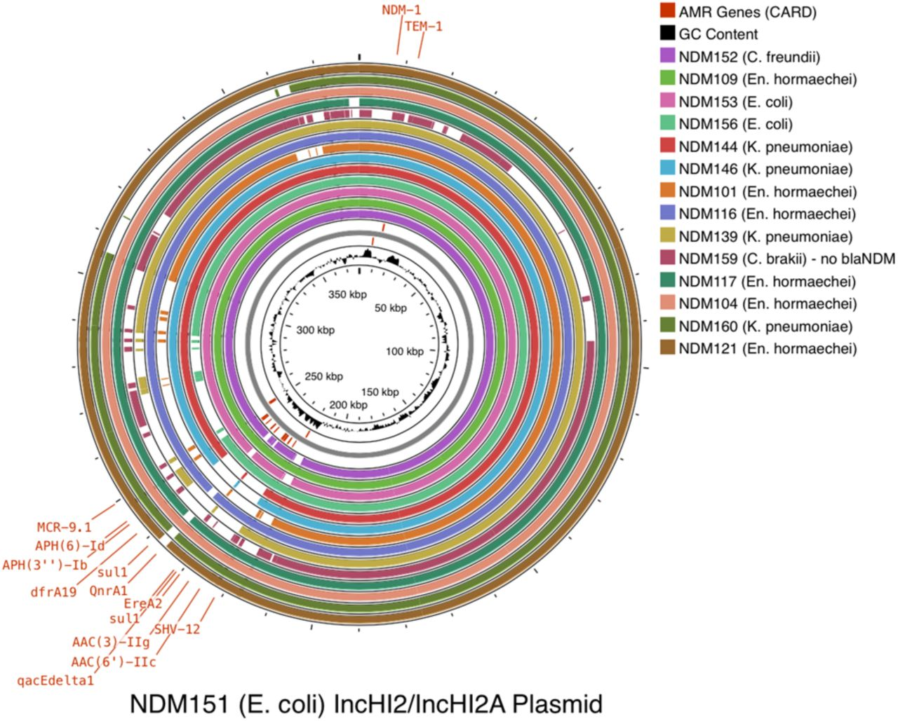

About
Upload one reference and one or more query genomes in FASTA format. Each query is aligned to the reference using lastz (via biowasm) and a BRIG-style circular plot is rendered. No data ever leaves your browser.
Real-World Example: NDM Plasmids
Six IncHI2 plasmids carrying blaNDM resistance from a nosocomial outbreak study, spanning five bacterial species collected 2023. Reference: NDM152 (C. freundii). Queries: NDM101, NDM121, NDM139, NDM144, NDM156.

Published figure (NDM151 ref, 14 queries) — click for full size
| Role | Isolate | Species |
|---|---|---|
| Reference | NDM152 | C. freundii |
| Query 1 | NDM101 | En. hormaechei |
| Query 2 | NDM121 | En. hormaechei |
| Query 3 | NDM139 | K. pneumoniae |
| Query 4 | NDM144 | K. pneumoniae |
| Query 5 | NDM156 | E. coli |
Upload Files
Drop .fasta / .fa / .fna / .gz or click
Drop files or click (select multiple)
Drop .gff / .gff3 or click
70%
0%
Updating plot…
Starting…
Mode
View
Your plot will appear here
Upload files and click Run Comparison
Reference
Queries
Alignments